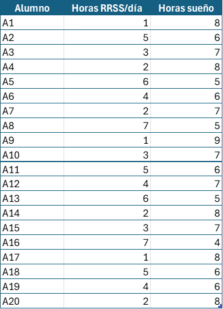
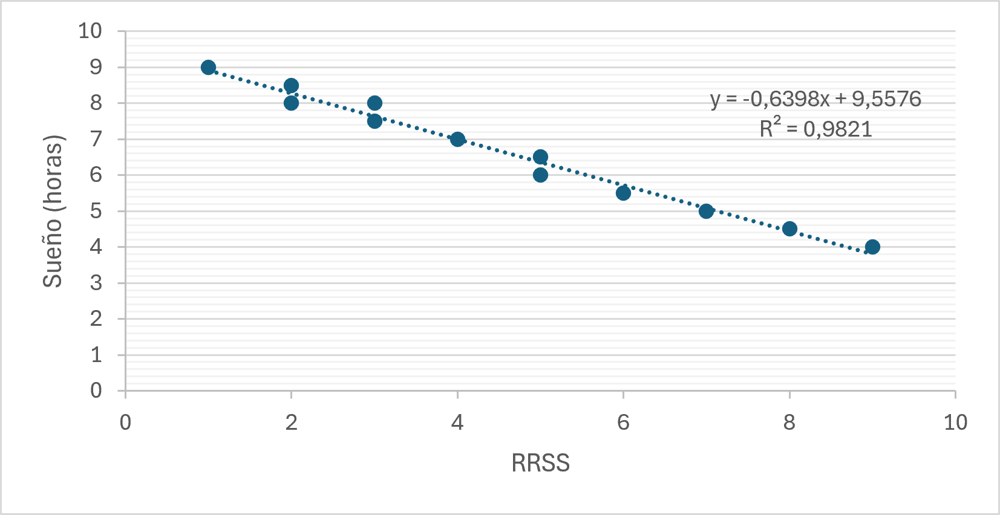
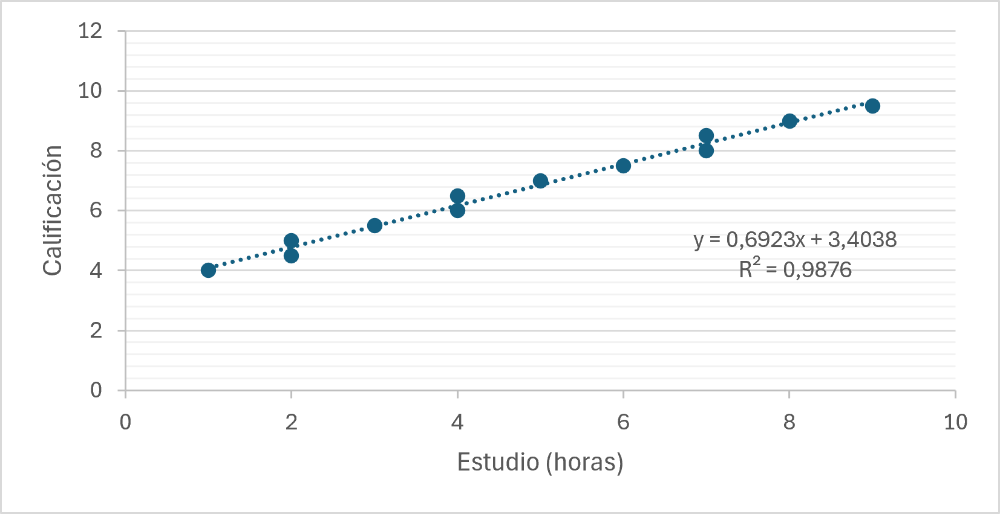
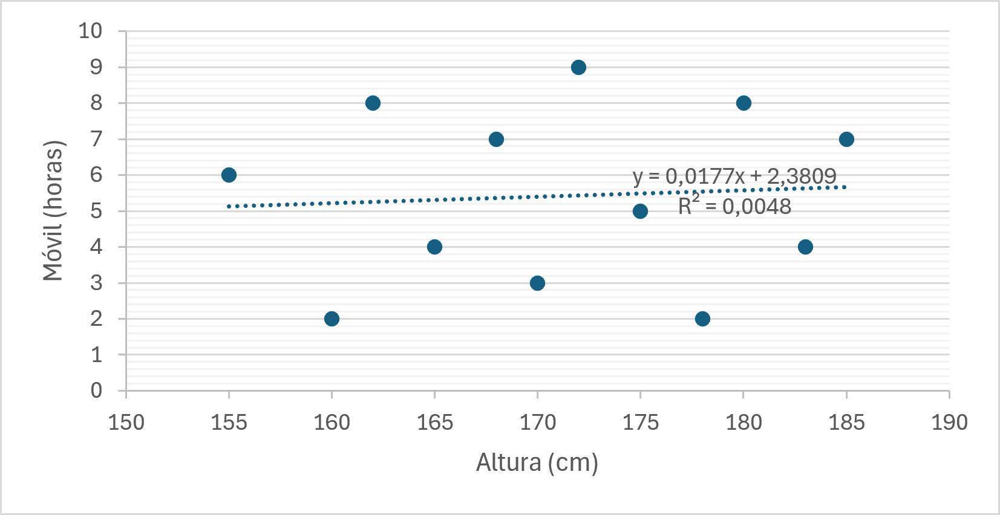

Nuestras variables estadísticas
El diseño de nuestra investigación a través del cuestionario digital nos ha generado una gran cantidad de datos en bruto. Cada una de estas respuestas corresponde a la información real de un compañero o compañera de clase, y ahora necesitamos ordenarla cruzando nuestras dos variables.
¡Mira este ejemplo!
| Tabla de frecuencias en bruto vs Tabla bidimensional bien organizada | |
|
 |

|
Como ya hemos decidido qué dos rutinas vamos a comparar, tendremos que estructurar la información calculando sus frecuencias (las distribuciones conjuntas y marginales) para descubrir cómo interactúan.
- ¿Influye la forma en la que agrupamos los datos a la hora de interpretar los resultados finales?
- Teniendo en cuenta que estamos comparando dos rutinas distintas de nuestro día a día, ¿existirá una dependencia estadística real entre ellas?
En esta actividad, trabajando en grupos cooperativos, vamos a intentar contestar a estas preguntas y tomaremos decisiones justificadas para construir nuestra tabla de doble entrada, de manera que consigamos tener nuestra base de datos perfectamente organizada para su posterior análisis estadístico.
Si tienes dudas puedes consultar el glosario que te facilitamos.
Nubes de puntos y correlación lineal
Un aspecto fundamental para interpretar nuestra tabla bidimensional es la representación gráfica de los datos. Esto nos permitirá visualizar de forma rápida si existe algún tipo de relación o tendencia matemática entre las dos rutinas que estamos estudiando. Si al representar las respuestas de nuestros compañeros los puntos se agrupan formando una línea imaginaria, estaremos ante una fuerte correlación.
En este ejemplo puedes ver cómo se representan gráficamente los datos cruzados de dos variables utilizando una hoja de cálculo. En este caso hemos utilizado como medidas el "Tiempo de uso de Redes Sociales" frente a las "Horas de sueño", las "Horas de estudio" frente a las "Calificaciones" y la "Altura en centímetros" frente a las "Horas de uso del móvil". Los datos obtenidos forman lo que llamamos un diagrama de dispersión o nube de puntos:
 |
 |
 |
| Correlación negativa | Correlación positiva | Correlación nula |
| A medida que aumentan las horas de uso de redes sociales, disminuyen las horas de sueño. | A medida que aumentan las horas de estudio, mejoran las calificaciones obtenidas. | No existe una relación clara entre la altura de una persona y las horas de uso del móvil. |
{kind=link}
{kind=link}
{kind=link}
Pulsa en la imagen para ampliar
Para realizar un buen análisis estadístico bidimensional, debemos extraer ciertos valores clave de nuestros datos. Las siguientes pestañas muestran los parámetros fundamentales que nos permiten cuantificar y modelizar la relación matemática entre dos variables según las definidas en el ejemplo anterior:
"Tiempo de uso de Redes Sociales" frente a las "Horas de sueño"
"Horas de estudio" frente a las "Calificaciones"
"Altura en centímetros" frente a las "Horas de uso del móvil"
Pulsa en la imagen para ampliar
Calculamos y modelizamos nuestros datos
Para el análisis estadístico de nuestra investigación, vamos a utilizar un modelo lineal. De esta forma, analizando la tendencia de nuestra nube de puntos, podemos obtener una recta de regresión matemática que nos ayude a predecir cómo un hábito (por ejemplo, las horas de uso de pantallas) afecta al otro (nuestras horas de sueño).
A partir de la tabla de datos bidimensionales de vuestro equipo, debéis crear un modelo que relacione vuestra variable independiente con la dependiente. Después, usaréis este modelo para averiguar la fuerza de vuestra correlación (r) y determinar si la recta obtenida es un buen modelo predictivo para la realidad de vuestra clase.
Para este cálculo es conveniente:
- Definir bien las variables (cuál es la variable independiente X y cuál la dependiente Y).
- Definir bien el modelo (Recta de regresión de Y sobre X).
- Realizar una buena representación gráfica (Diagrama de dispersión o nube de puntos).
- Realizar un análisis de la correlación entre las variables (Calculando la covarianza y el coeficiente de correlación de Pearson).
Consulta en qué consiste un modelo lineal en el glosario
¿Cómo lo hago?
Para realizar el modelo puedes usar una hoja cálculo, la calculadora o el applet de GeoGebra que está a continuación.
Geogebra
Puedes usar Geogebra para crear un modelo lineal.
https://www.geogebra.org/m/vjarzxwg (Ventana nueva)
Licencia CC BY SA NC
Nota: Recuerda que GeoGebra usa el . como separador decimal.
Hacemos predicciones con nuestro modelo
Ya conocemos el tipo de relación que hay entre nuestras variables estadísticas y hemos trazado la recta de regresión. El siguiente paso es calcular estimaciones; es decir, usar nuestro modelo matemático para hacer predicciones.
Los parámetros que hemos calculado anteriormente nos indican la fiabilidad de nuestro estudio. Si nuestro coeficiente de determinación (R²) se acerca a 1, las predicciones que hagamos serán muy fiables.
Vuelve a observar los resultados de vuestro equipo y utilizad la ecuación de vuestra recta de regresión para realizar estimaciones puntuales. Por ejemplo, si investigáis el uso de pantallas y el descanso, ¿cuántas horas de sueño podemos predecir para un compañero que pase 7 horas al día en redes sociales?
Para realizar el cálculo es conveniente:
- Identificar correctamente la ecuación de la recta de regresión de nuestro gráfico ().
- Sustituir de forma correcta el valor de la variable independiente (X).
- Calcular el valor estimado para nuestra variable dependiente (Y).
- Analizar si la predicción es fiable revisando nuestro coeficiente de determinación (R²).
¿Cómo lo hago?
Para realizar el modelo puedes usar una hoja cálculo, la calculadora o el applet de GeoGebra que está a continuación.
GeoGebra
https://www.geogebra.org/m/vjarzxwg (Ventana nueva)
Licencia CC BY SA NC
Nota: Recuerda que GeoGebra usa el . como separador decimal.
Tomamos una decisión
Para terminar esta fase de la actividad, tenemos que interpretar los parámetros estadísticos que hemos calculado y tomar decisiones fundamentadas sobre lo que nos dice nuestro modelo matemático. Los datos que necesitaremos valorar serán los siguientes:
- Nuestras variables de estudio (Variable independiente X y Variable dependiente Y).
- La fuerza de nuestra relación matemática (el coeficiente de correlación).
- La fiabilidad predictiva de nuestro modelo (el coeficiente de determinación).
- El tipo de relación analizada: ¿Existe una causalidad real (una cosa provoca la otra) o es solo una correlación donde podría haber variables ocultas?
Todos estos datos los tendréis que cumplimentar en la siguiente tabla para ir preparando vuestro informe final, justificando de forma rigurosa y argumentada las conclusiones a las que ha llegado vuestro equipo sobre los hábitos de vuestra clase:
| Variables de nuestro estudio (X e Y) | |
| Valor de la correlación (r) e interpretación | |
| Fiabilidad de nuestras predicciones (R²) | |
| Conclusión final: ¿Correlación o causalidad real? |
Lectura facilitada
Los datos que necesitaremos serán los siguientes:
- El tamaño total del cuadrado.
- El número de vueltas necesarias.
- El grosor del material elegido.
- La cantidad de material que vamos a necesitar.
Todos estos datos los tendréis que cumplimentar en la siguiente tabla, justificando los motivos por los que habéis tomado esa decisión:
Tamaño del cuadrado granny (centímetros)
Número de vueltas (cuadrados concéntricos)
Grosor material (vueltas/pulgada)
Cantidad material (metros)
Audio
Descripción de la tarea a realizar.
Apoyo visual

Glosario
- Modelo lineal
-
Un modelo lineal es un modelo que usa una función lineal para representar una situación que incluya una tasa de cambio constante. El gráfico de una función lineal es una línea recta.
En estadística un modelo lineal predice el valor de una variable a través de otra mediante una función lineal; habitualmente también se suele llamar «modelo de regresión lineal».
- Desviación típica
-
La desviación típica es una medida estadística que indica la cantidad de dispersión o variabilidad que hay en un conjunto de datos con respecto a su media.
La desviación típica mide qué tan alejados están los datos individuales de la media del conjunto.
- Covarianza
- La covarianza de una variable bidimensional (X,Y), \(S_{x,y}\) se define como la media aritmética del producto de las desviaciones de cada una de las variables respecto de sus respectivas medias.
o \begin{equation} \boxed{ \displaystyle S_{xy} = \frac{ \sum f_i \cdot x_i \cdot y_i }{n} - \bar{x} \bar{y} } \end{equation} La covarianza nos mide la variación conjunta de dos variables:- Si es positiva, nos dará la información de que, a valores altos de una de las variables, hay una mayor tendencia a encontrar valores altos de la otra variable, y a valores bajos de una de las variables, ,corresponden valores bajos de la otra.
- Si es negativa nos dará la información de que a valores altos le corresponderán bajos, y a valores bajos, altos.
- Si es cero no hay una covariación clara en ninguno de los dos sentidos.
Observa el siguiente applet y mueve los puntos verdes para obtener una covarianza positiva, una covarianza negativa y una covarianza cero.
José Luis Muñoz Casado. Licencia CC BY SA NC
- Recta de regresión
-
En estadística, un modelo lineal se refiere a una técnica para modelar la relación entre una variable dependiente (y) y una (o varias variables independientes) (x). El modelo lineal estadístico asume que la relación entre las variables es lineal, es decir, que puede ser representada por una recta en un plano cartesiano.
Un ejemplo de modelo lineal estadístico es la regresión lineal simple, en la cual se busca encontrar la recta que mejor se ajuste a los datos para representar la relación entre dos variables. La recta se define por una ecuación de la forma , donde «a» es la pendiente y «b» es la ordenada al origen.
La recta de regresión de la variable. Y sobre la variable X tiene la siguiente expresión
donde:
-
-
es la media aritmética de la variable x.
-
es la media aritmética de la variable y.
-
es la covarianza.
-
es la desviación típica de la variable
-
José Luis Muñoz Casado. Licencia CC BY SA NC
-
- Correlación lineal
-
La correlación lineal es una medida estadística que expresa hasta qué punto dos variables están relacionadas linealmente. Es una herramienta para describir relaciones simples sin hacer afirmaciones sobre causa y efecto.
Para medir la correlación se emplea el coeficiente de correlación:
José Luis Muñoz Casado. Licencia CC BY SA NC
Observa la distribución de los puntos según los valores del coeficiente de correlación (-1, negativo, 0, positivo, +1).
Es una representación abstracta de un sistema o proceso del mundo real mediante ecuaciones o fórmulas matemáticas.
Un modelo matemático es una representación simplificada, a través de ecuaciones, funciones o fórmulas matemáticas, de un fenómeno o de la relación entre dos o más variables.
Recursos y evaluación de los aprendizajes
Recursos
Productos evaluables
- Planteamiento estadístico bidimensional del problema (identificación correcta de las variables X e Y).
- Cálculo del modelo de regresión (obtención de la recta de regresión) y los parámetros de correlación (r y R²) para los datos reales del equipo.
- Utilización autónoma del software informático o la calculadora científica para procesar la información y trazar diagramas de dispersión.
- Uso de la ecuación de la recta de regresión para realizar estimaciones puntuales lógicas.
- Decisión y conclusión final justificada acerca del tipo de relación que existe entre los hábitos estudiados, diferenciando claramente entre correlación y causalidad.